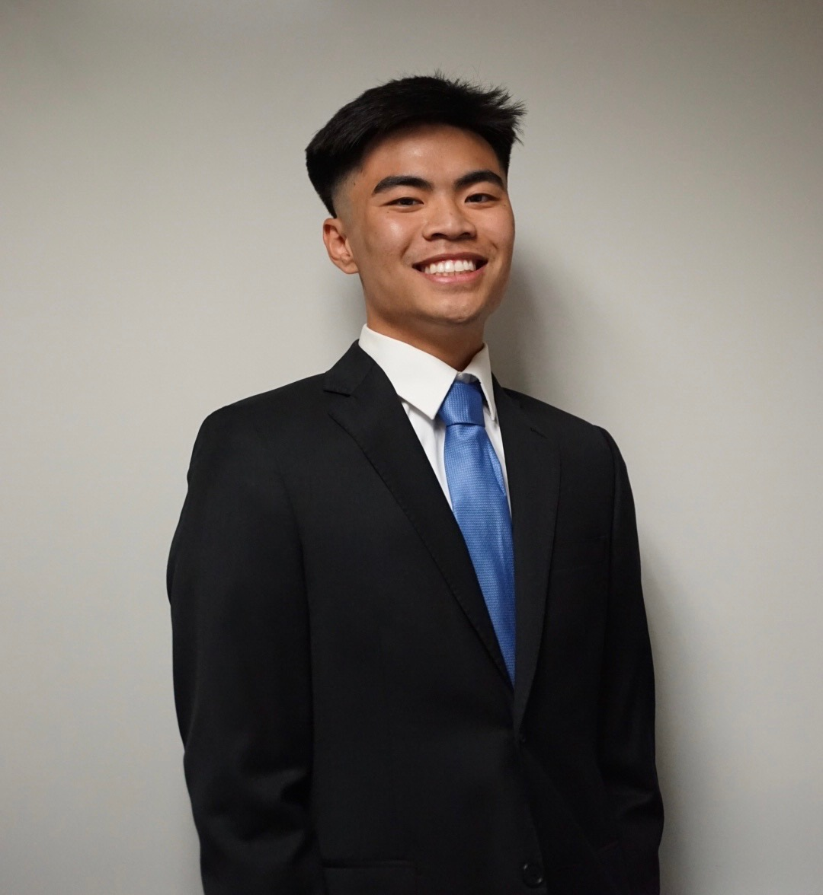

3rd year at University of California, Irvine


Nicholas Cabral
Pronouns: he/him
3rd year at University of California, Irvine
Major: Informatics
About Me
I am a data-driven, aspiring, product manager that finds solutions to user problems delivering customer value and business value. I’m willing to develop my skills and gain new experiences as a product manager while building upon my experience addressing customer and business needs for products. I excel in analytical, and problem-solving amongst cross-functional teams demonstrated through my coursework, previous internships, and school extracurriculars. I’m currently a 3rd-year Informatics major at the University of California, Irvine specializing in Human-Computer Interaction, which helps me understand the importance of data-driven design decisions.